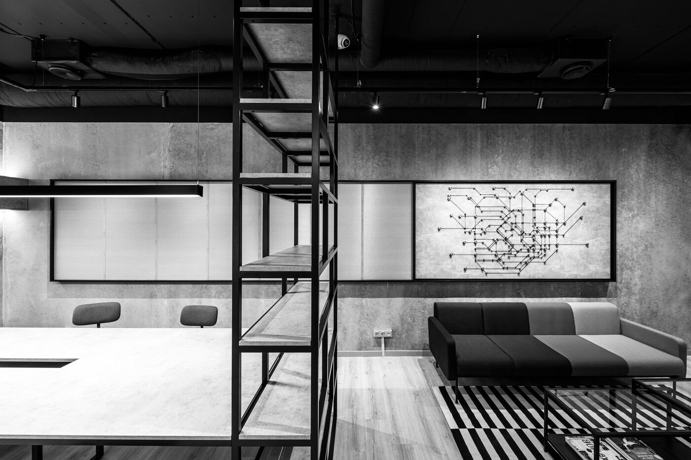

Kaip tai prasidėjo?
DROPAUDIO 2007 m. Vilniuje įkūrė Robertas Maliauka – tuo metu, kai garso gamybos procesams vis dar trūko aukštų vadybos standartų, koordinavimas buvo neprognozuojamas, o balsų panaudojimo (teisių) klausimas rinkoje dar apskritai neegzistavo.
Mes pasirinkome kurti naujus standartus: vienas kontaktas, skaidrus procesas, garantuotas rezultatas. Sukūrėme balsų duomenų bazę, investavome į profesionalią studijų infrastruktūrą ir pradėjome dirbti kaip tikras audio partneris.
Šiandien mūsų klientai yra tarptautinės bei vietinės agentūros ir pasauliniai ar vietiniai prekių ženklai.
